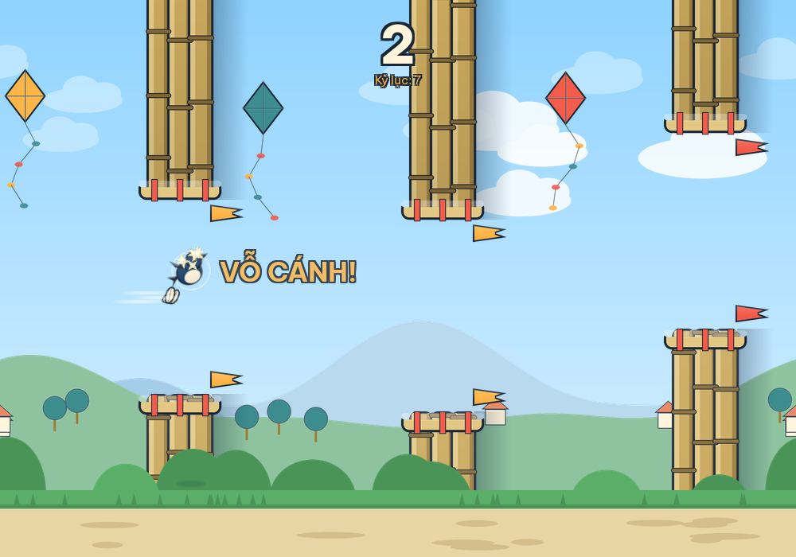
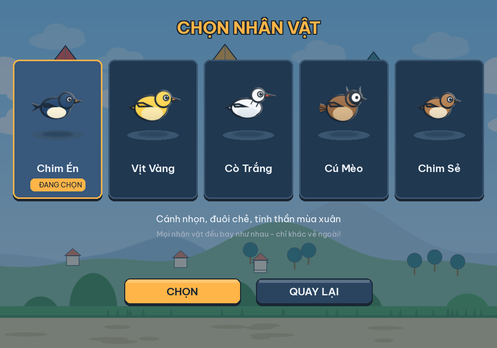
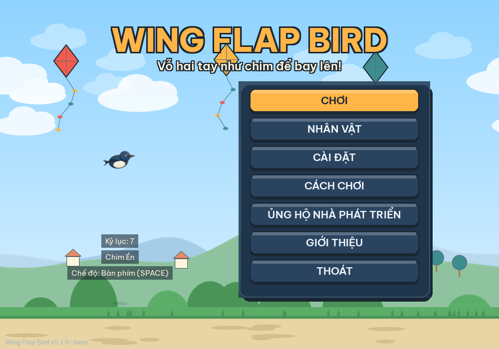

⬇️ Tải game (Windows 10/11 x64)
- Mở trang GitHub Releases
- Tải
WingFlapBird-v0.1.0-beta-Windows-x64.zip - Giải nén và mở
WingFlapBird.exe
Không cần cài Python, không cần Internet. Không có webcam vẫn chơi được bằng phím SPACE.
🐤 Năm nhân vật — miễn phí từ đầu
- Chim Én
- Vịt Vàng
- Cò Trắng
- Cú Mèo
- Chim Sẻ
Mọi nhân vật bay như nhau — chỉ khác vẻ ngoài. Không khóa, không trả phí.


🎮 Cách chơi
- Đứng cách webcam 1.5–2.5 m, camera thấy được vai và hai tay.
- Hiệu chỉnh nhanh ~5 giây theo hướng dẫn trong game.
- Nâng hai tay qua vai rồi hạ xuống dứt khoát = một lần vỗ cánh.
- Né các cổng tre để ghi điểm!
🔒 Quyền riêng tư
Hình ảnh webcam được xử lý 100% cục bộ trên máy bạn. Game không ghi hình, không lưu video, không gửi dữ liệu lên Internet, không telemetry. Trang này cũng không dùng cookie hay tracking. Chi tiết: PRIVACY.md
💛 Ủng hộ nhà phát triển
Wing Flap Bird miễn phí. Nếu bạn thích trò chơi, bạn có thể ủng hộ để hỗ trợ các bản cập nhật tiếp theo. Hoàn toàn tự nguyện và không mở khóa lợi thế trong game.

Quét mã bằng ứng dụng ngân hàng của bạn.